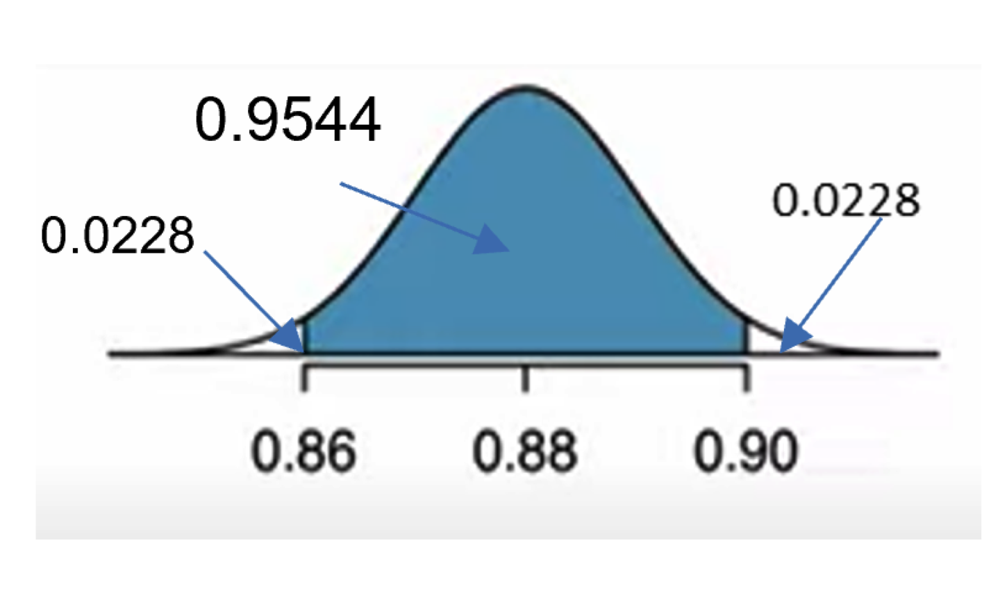

These notes use content from OpenIntro Statistics Slides by
Mine Cetinkaya-Rundel.
These notes use content from OpenIntro Statistics Slides by
Mine Cetinkaya-Rundel.
Statistical inference is primarily concerned with understanding and quantifying the uncertainty of parameter estimates.
In this chapter, we learn about the foundations for inference regarding population proportion ùëù.
5.1 Point Estimates and Sampling Variability
5.2 Confidence Interval for a Proportion
5.3 Hypothesis Testing for a Proportion
We begin with investigating the probability distributions of one important statistic - sample proportion.
Review the concepts parameter and statistic
A parameter is a numerical summary of the population. Example: Percentage of the population of all Florida residents favoring gun control
A statistic is a numerical summary of a sample taken from the population.
Example: Percentage of a group of Florida residents favoring gun control
Notations: ùëù for population proportion, \(\hat{p}\) for sample proportion.
In this section, we investigate the probability distributions of one important statistic– sample proportion.
This is called the sampling distribution of sample proportion, represented in CENTRAL LIMIT THEOREM.
We are often interested in population parameters.
Complete populations are difficult to collect data on, so we use sample statistics as point estimates for the unknown population parameters of interest.
Error in the estimate \(\rightarrow\) difference between population parameter and sample statistic.
Bias is systematic tendency to over- or under-estimate the true population parameter.
Sampling error describes how much an estimate will tend to vary from one sample to the next.
Much of statistics is focused on understanding and quantifying sampling error, and sample size is helpful for quantifying this error.
Example. Suppose the proportion of American adults who support the expansion of solar energy is ùëù=0.88, which is our parameter of interest. Is a randomly selected American adult more or less likely to support the expansion of solar energy?
Answer: More likely. (b/c ùëù=0.88 is large)
Example. Suppose you don’t know the exact proportion of American adults who support expansion of solar energy. In order to estimate the proportion, you might sample from the population and use your sample proportion as the best guess for the unknown population proportion.
Take simple random samples, say, each with \(ùëõ=1000\) American adults from the population, and record whether they support solar power expansion or not.
For each sample, find the sample proportion \[\hat{ùëù}= \frac{ùë•}{ùëõ}= \frac{(\text{count of those in favor})}{( \text{ùë†ùëéùëöùëùùëôùëí ùë†ùëñùëßùëí})}\]
Different samples may yield different sample proportions. We may simulate the sampling process.
Sampling Distribution of the Sample Proportion https://istats.shinyapps.io/SampDist_Prop/
Put the value and the sample size,
say ùëù=0.88, ùëõ=1000
We may simulate 1 by 1
Or we can draw 10,000 samples of the same size, say \(ùëõ=1000\)
# 1. Create a set of 250 million entries, where 88%
# of them are "support" and 12% are "not".
set.seed(101) #for everyone running the code to see the same result
pop_size = 250000000
possible_entries = c(rep("support", 0.88 * pop_size),
rep("not", 0.12 * pop_size))
# 2. Sample 1000 entries without replacement.
sampled_entries = sample(possible_entries,
size = 1000, replace = F)
# 3. Compute p-hat: count the number that are
# "support", then divide by # of the sample size
sum(sampled_entries == "support")/1000
pop_size = 250000000
possible_entries = c(rep("support", 0.88*pop_size), rep("not", 0.12*pop_size))
sample_entries = sample( possible_entries, size=1000)
phat1 = sum(sample_entries == "support")/1000
error1 = 0.88 - phat1
error1
## We have one sample proportion and the error! Do it again!
sample_entries = sample( possible_entries, size=1000)
phat2 = sum(sample_entries == "support")/1000
error2 = 0.88 - phat2
error2
If we repeat this process many times and obtain many \(\hat{p}\) values. The distribution of these \(\hat{p}\) values is called the sampling distribution of \(\hat{p}\).
What is the shape and center of this distribution? Based on this distribution, what do you think is the true population proportion?

The distribution is unimodal and roughly symmetric.
A reasonable guess for the true population proportion is the center of this distribution, approximately 0.88.
Central Limit Theorem for Proportion
When observations are independent (take random samples of fixed size ùëõ, without replacement) and the sample size ùëõ is large enough, i.e., \(nùëù‚â•10\) and \(ùëõ(1‚àíùëù)≥ 10 )\), then the sample proportion \(\hat{p}\) is approximately normal with
mean: \(\mu_{\hat{p}}=ùëù\), and
standard deviation (also called standard error S.E.): \(\sigma_{\hat{p}}= \sqrt{\frac{ùëù(1‚àíùëù)}{ùëõ}}\)
The CLT states that when observations are independent and the sample size is sufficiently large, then \[\hat{p} \sim N\left(p, \sqrt{\frac{ùëù(1‚àíùëù)}{ùëõ}}\right)\]
The CLT indicates that \(\hat{ùëù}\) is an unbiased point estimator for the parameter ùëù.
As the sample size ùëõ increases, the variation of \(\hat{ùëù}\) decreases
By CLT, we may use the normal distribution to compute probabilities of \(\hat{ùëù}\) and \[ùëç=\frac{\hat{ùëù}- ùúá_{\hat{p}}}{ùúé_{\hat{p}}} \sim N(0,1)\]
Solution
\(ùúá_{\hat{p}}=p=0.88\), \(S.E_{\hat{p}}\) or (\(ùúé_{\hat{p}}\)) \(= \sqrt{\frac{ùëù(1‚àíùëù)}{ùëõ}}=\sqrt{\frac{0.88(1−.88)}{1000}} = 0.010\), and as \(np= 880 > 10\) and \(n(1-p)= 120>10\), i.e., the sample size is sufficiently large, by CLT \(\hat{p} \sim N(.88,0.01)\)
For \(\hat{p} = 0.86\): \(z = \frac{0.86-0.88}{0.010}= -2\) and for \(\hat{p}= 0.90\): \(z=2\)
\(P(0.86 < \hat{p} < 0.90) = P(-2 < Z < 2)= 0.9545\).
pnorm(0.90, 0.88, 0.010) - pnorm(0.86, 0.88, 0.010)

Solution
\(ùúá_{\hat{p}}=p=0.88\), \(S.E_{\hat{p}}\) (or\(ùúé_{\hat{p}}\)) \(= \sqrt{\frac{ùëù(1‚àíùëù)}{ùëõ}}=\sqrt{\frac{0.88(1−.88)}{100}} = 0.032496 \approx 0.0325\), and as \(np= 880 > 10\) and \(n(1-p)= 120>10\), i.e., the sample size is sufficiently large, by CLT, \(\hat{p} \sim N(.88,0.0325)\)
For \(\hat{p} = 0.86\): \(z = \frac{0.86-0.88}{0.0325}= -0.62\) and for \(\hat{p}= 0.90\): \(z=0.62\)
\(P(0.86 < \hat{p} < 0.90) = P(-0.62 < Z < 0.62)= 0.4617\).
pnorm(0.90, 0.88, 0.0325) - pnorm(0.86, 0.88, 0.0325)
Compare the results for \(ùëõ=1000\) and \(n=100\): how does the sample size affect the S.E., and the values of z scores?
Certain conditions must be met for the CLT to apply:
Independence: Sample observations must be independent. How to verify;
Success-Failure condition (Large sample size): There should be at least 10 expected successes and 10 expected failures in the observed sample. Check if
When \(p\) is unknown.
The CLT states \(SE = \sqrt{\frac{p(1-p)}{n}}\), with the condition that \(np\) and \(n(1-p)\) are at least 10, however we often don’t know the value of \(p\), the population proportion.
In these cases we substitute \(\hat{p}\) for \(p\). \[SE = \sqrt{\frac{p(1-p)}{n}} \approx = \sqrt{\frac{\hat{p}(1-\hat{p})}{n}}\] Note: when the population size is N, and ùëõ‚â•0.10‚àóùëÅ,
Then use a finite population correction factor \(\sqrt{\frac{(ùëÅ‚àíùëõ)}{(ùëÅ‚àí1)}}\) \[SE = \sqrt{\frac{p(1-p)}{n}}\sqrt{\frac{(ùëÅ‚àíùëõ)}{(ùëÅ‚àí1)}}\] which gives smaller, more precise estimate of S.E.
Suppose we have a population where the true population proportion is \(p=0.05,\) and we take random sample of size \(n = 50\) from this population. We calculate the sample proportion in each sample and plot these proportions. Would you expect this distribution to be nearly normal? Why, or why not?
No, the success-failure condition is not met \((50 *0.05 = 2.5)\), hence we would not expect the sampling distribution to be nearly normal.
What happens when \(np\) and/or \(n(1-p)< 10\)?
When either \(np\) or \(n(1-p)\) is small, the distribution is more discrete.
When \(np\) or \(n(1-p)<10\), the distribution is more skewed.
The larger both \(np\) and \(n(1-p)\), the more normal the distribution.
When \(np\) and \(n(1-p)\) are both very large, the discreteness of the distribution is hardly evident, and the distribution looks much more like a normal distribution.
The strategy of using sample statistic to estimate a parameter is quite common, and it’s a strategy that we can apply to other statistics besides a proportion.
The principles and general ideas are from this chapter apply to other parameters as well, even if the details change a little.